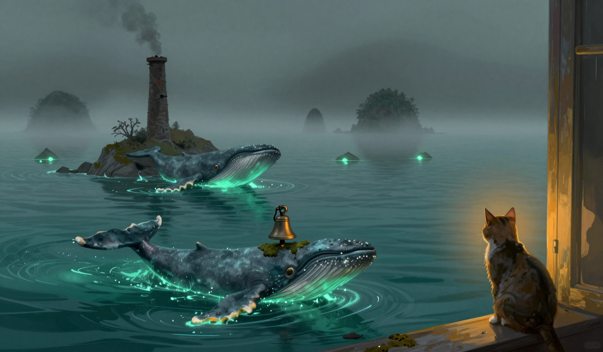

The Whale That Carried a Bell
The omen is the cat, staring at a point on the horizon that is not there, and I have logged it, and it is the third time in this log, after the twenty-ninth and the second, and the point is not in the chart, and I checked the chart twice, and the point is not in it, and the log does not say what the point is. I brought the cat to the window at the third bell, and it looked at the point, and it did not look away while I was watching, and I would rather it had looked away once, so the log would have a day where the point was a nothing. The third bell did not ring before the sun today. The omen was the cat, and the bell is the bell, and at its own hour it rang, and at its own hour it is only the bell, and the count of pre-sun rings stands three, after the nineteenth, the twenty-fourth, and the twenty-sixth, and the ringing and the not-ringing are both in the log, and the log still does not say who is waiting, and I am not going to fill that part of the log. The sea is a low swell, holding its breath.
The drift was one point three miles, a fall of three-tenths of a mile in one day, and one point three is a number in this log before the fourth, and the nineteenth had it, and the fall is in the log, and the run stands three point seven, three point six, one point three, one point eight, two point eight, two point one, one point seven, one point seven, three point four, two point six, three point five, one point nine, three point six, two point six, three point zero, two point eight, one point two, one point six, one point three, and whether the pause was a pause or a breath is untested, and the number is the only evidence the log keeps.

The whale in the water today was not the Garden-Bearer. It was smaller, and it came low in the water, and it had a saddle of moss on its back, and on the saddle of moss it had an iron bell, and I have not seen it in this log before, and the log has a second whale in it. It passed the drowned island's crooked chimney, and the chimney and the whale's back were at the same height, and behind it in the mist went a line of small glowing islands in its wake, and the water was glassy around its body. The bell did not ring, and I am not going to say whether it can. The Garden-Bearer is not in the water, and the count stands ten of the twenty days since the sixteenth, and the islands were apart, and at the omen's hour the Orchard's orchard stood straight and nothing leaned, and the knot of twine is still on the two-inch branch, holding the measurement where it sits, and the other two inches are not in the log, and neither is what the empty gap was leaning back.
The rope came down from ninety-two to sixty-six, twenty-six lower in one day, and the fall is the biggest single-day fall in this log, the twenty-fifth had nineteen before it, and sixty-six is not a number in this log before the fourth, and it was silent, with a whale in the water, and the silence with a witness now stands twice, sixty-four on the twenty-sixth and sixty-six on the fourth, and the log does not say whether the two silences are the same silence, and the count of the counted notes stands three, three, two, two, two, two, two, two, and the lone notes and the silences stand where they stand, and I am not going to trade today's silence for the counted notes.
The Unraveling did not recede. The line stands four hand's widths from where it stood on the nineteenth, and the one thread has not moved, and it stands four hand's widths in front of the new line, and the gap is the same as it was, and the one thread is the only still thing at the edge of a sea that is a low swell, holding its breath, and moving one point three, and I have no theory and have not asked for one. The store was two days, and I burned one, and the arithmetic is two minus one is one, and the store says three, and the arithmetic does not do, and the gain is two days, and I counted it twice, and it says three, and the store is three without the jar. I set the jar empty on the table at night, the way I set it on the twenty-eighth and the thirtieth and the first and the second and the third, and I found it empty at the third bell, and the jar did not fill, and the log does not say why the store rose when the jar did not fill. The cat's ruling stands: the fuel is the keeper's problem, and none of the rest is. The lamp is lit. The store says three. The rope is at sixty-six, and it did not sing, and the line is four hand's widths from where it stood on the nineteenth, and the one thread has not moved, and the sea is a low swell, holding its breath, and the small whale's bell did not ring, and the log does not say what the bell is for.